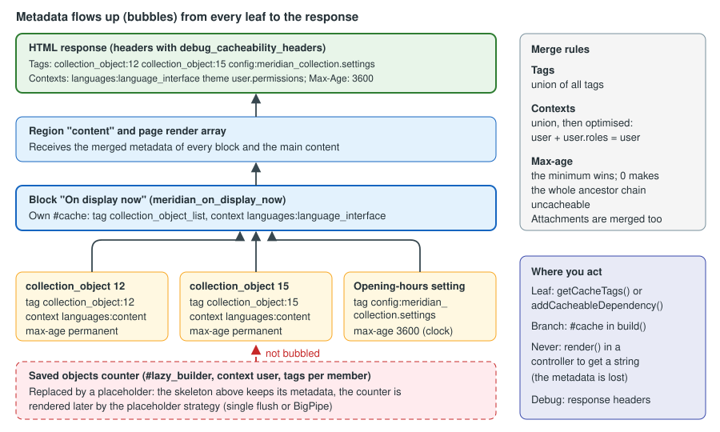

Render API and Cache Metadata
|
This content was generated with the assistance of AI and should be verified against the official documentation before being relied on in production. |
Almost everything a Drupal module shows to a visitor is a render array: a nested PHP array that describes what to draw, not the HTML itself. The renderer turns the array into markup at the very end of the request, and while it does so it collects cacheability metadata from every element — what the output depends on (cache tags), what it varies by (cache contexts) and how long it may live (max-age) — and merges it into the response. Everything that makes Drupal both personalised and fast rests on that single mechanism: the Internal Page Cache, the Dynamic Page Cache, the render cache, BigPipe and reverse proxies that purge by tag all read the metadata that this page teaches you to produce. A module that gets it wrong either serves stale or private content to the wrong person (metadata too weak) or throws away every cache on the site (metadata too strong).
This page was written on 2026-10-30 against Drupal 11.4.x (the current minor), Drush 13/14 and PHP 8.3 or later. Drupal 10
reaches end of life on 2026-12-09, so a new site must not start on it, and Drupal 12.0.0 is scheduled for the week of
2026-12-07 (it removes renderPlain(), described below). The examples belong to the meridian_collection module of the
fictitious Meridian Museum, namespaced Drupal\meridian_collection\, and use constructor injection, PHP attributes for
plugins and object-oriented hooks with #[Hook] (Drupal 11.1 and later). The reader is the module developer; the site
builder and the operator will find the layers and the Performance screen in
Performance and caching, and the themer’s side of the pipeline in
Theming overview and the render pipeline.
Related pages: the blocks that return render arrays are in Blocks and block layout and Block, field type, widget and formatter plugins; routes that return them are in Routing and controllers; services and injection in Services and dependency injection; hooks in Hooks and object-oriented hooks; libraries attached to render arrays in Libraries and assets; and cache metadata of access checks in Access control and permissions in code.
The model in one picture
Think of a page as a tree. The leaves are things that come from data: a collection_object entity, a configuration object,
the current user. Each leaf knows its own metadata — an entity says collection_object:12, a configuration object says
config:meridian_collection.settings. Each branch adds its own #cache and then inherits the metadata of everything below
it. The root is the response, which turns the merged metadata into HTTP headers and into the cache entries of every layer.

The three kinds of metadata answer three questions:
| Metadata | Question | How it merges while bubbling |
|---|---|---|
Cache tags |
"What data does this depend on?" |
Set union. When any tag is invalidated, every item carrying it is invalid, in every cache bin and every proxy. |
Cache contexts |
"What does this vary by?" |
Set union, then optimised: a context that is a child of another ( |
Max-age |
"For how many seconds may this be reused?" |
The minimum of all values. |
A fourth item travels with them: attachments (#attached), the libraries, drupalSettings, head tags and HTTP headers that
the output needs. Cacheability metadata plus attachments (and placeholders) is called bubbleable metadata. The official
description of the section is the Render API guide, with the pages on render arrays, cacheability of render arrays and
auto-placeholdering, and the Cache API guide with the pages on tags, contexts and max-age; the references at the end list them.
Render arrays in code
A render array is an associative array. Keys that start with # are properties that control rendering; every other key is a
child element that is itself a render array. The order of children is decided by #weight, and the whole structure is a tree
in the same way the DOM is.
$build = [
'#type' => 'container',
'#attributes' => ['class' => ['meridian-on-display']],
'heading' => [
'#type' => 'html_tag',
'#tag' => 'h2',
'#value' => $this->t('On display now'),
],
'summary' => [
'#markup' => $this->t('@count objects are in the galleries today.', ['@count' => 42]),
],
'list' => [
'#theme' => 'item_list',
'#items' => ['Foucault pendulum', 'Orrery', 'Wimshurst machine'],
'#weight' => 10,
],
];Source: Render API: Render arrays
The properties that matter most:
| Property | Meaning |
|---|---|
|
Names a render element plugin ( |
|
Names a theme hook (usually backed by a Twig template, for example |
|
Supplies HTML directly. The value is passed through an admin XSS filter that removes |
|
Supplies text that is escaped. It takes precedence over |
|
Makes the element cacheable and states its metadata, with the sub-properties |
|
Assets and other attachments: |
|
Callbacks that change the array before it is rendered or the HTML after it is rendered. |
|
Defer the construction of the element until the end of the request; see Lazy builders and placeholders. |
|
Visibility (a boolean or an |
Several rules follow directly from this design:
-
A property starts with
#; anything else is a child. A stray key such as$build['count']that holds a plain string is a child with no#property and is silently ignored by the renderer. -
Build the array from the model (entities, values), never from rendered HTML. A string that has already been rendered has lost its metadata.
-
#markupis filtered, not escaped.#plain_textis escaped. Neither is a substitute for translatable placeholders:$this->t('Hello @name', ['@name' => $name])escapes the placeholder value, whereas concatenating a variable into a#markupstring does not. -
Form API arrays (
#type => 'form'and the input elements) must pass throughFormBuilderbefore the renderer sees them; see Form API.
A controller that returns a render array
The preferred output of a controller is a render array, not a string and not a Response. The kernel renders it, adds the
page chrome and handles the metadata. The Meridian Museum shows the current exhibitions on a "What is on" page. Every part of the
array declares what it depends on:
<?php
declare(strict_types=1);
namespace Drupal\meridian_collection\Controller;
use Drupal\Core\DependencyInjection\ContainerInjectionInterface;
use Drupal\Core\Entity\EntityTypeManagerInterface;
use Symfony\Component\DependencyInjection\ContainerInterface;
/**
* Lists the published exhibitions.
*/
final class WhatsOnController implements ContainerInjectionInterface {
public function __construct(
private readonly EntityTypeManagerInterface $entityTypeManager,
) {}
public static function create(ContainerInterface $container): static {
return new static($container->get('entity_type.manager'));
}
public function page(): array {
$storage = $this->entityTypeManager->getStorage('node');
$ids = $storage->getQuery()
->accessCheck(TRUE)
->condition('type', 'exhibition')
->condition('status', 1)
->sort('field_start_date', 'ASC')
->range(0, 10)
->execute();
$build = [
'#theme' => 'item_list',
'#items' => [],
'#cache' => [
// Any exhibition created, changed or deleted changes this list.
'tags' => $this->entityTypeManager->getDefinition('node')->getListCacheTags(),
// Titles and links are translated; access is per-user.
'contexts' => ['languages:language_interface', 'user.permissions'],
],
];
foreach ($storage->loadMultiple($ids) as $exhibition) {
$build['#items'][] = $exhibition->toLink()->toRenderable();
// Each exhibition adds its own tag (node:ID), its access result and its language.
$build['#cache']['tags'] = array_merge($build['#cache']['tags'], $exhibition->getCacheTags());
}
return $build;
}
}The pieces that deserve attention: accessCheck(TRUE) is mandatory on every entity query (see
Database API and entity queries); the list tag node_list (and
node_list:exhibition for a bundle) is what makes a new exhibition appear; and $exhibition->getCacheTags() is how an
individual item is tracked. The toLink()->toRenderable() link already carries its own metadata (it is a link element
that depends on the URL and the access result), which bubbles up on its own. In real code prefer
CacheableMetadata to the manual array_merge(), as the next sections show. Returning a render array also lets the Dynamic
Page Cache store the result: the controller output is cached as part of the page, and varying it by user.permissions instead
of user keeps the number of cached variants small.
#theme and hook_theme
A custom theme hook is declared with the theme hook definition and, from Drupal 11.1, can be written as an object-oriented hook.
The Meridian Museum defines meridian_object_card for the collection:
<?php
declare(strict_types=1);
namespace Drupal\meridian_collection\Hook;
use Drupal\Core\Hook\Attribute\Hook;
/**
* Theme hook definitions of the Meridian collection module.
*/
final class ThemeHooks {
#[Hook('theme')]
public function theme(): array {
return [
'meridian_object_card' => [
'variables' => [
'title' => NULL,
'accession_number' => NULL,
'period' => NULL,
],
],
];
}
}{# templates/meridian-object-card.html.twig #}
<article class="object-card">
<h3>{{ title }}</h3>
<p class="object-card__accession">{{ accession_number }}</p>
<p>{{ period }}</p>
</article>hook_theme() is one of the hooks that can be an OOP method since 11.1; module code that must run on 10.x keeps the
procedural function. Template variables are escaped by Twig; a value that must contain HTML is passed as a render array
(for example a child element), never marked safe by hand. See
Template suggestions and preprocess for the template side.
Pre-render callbacks and trusted callbacks
A callback named in #pre_render, #post_render, #lazy_builder, #access_callback and a few other places is a PHP callable
stored in the array. Because render arrays are cached, serialised and sometimes built from data that crossed a trust
boundary (a form rebuild, a request parameter), Drupal refuses to call any callable that its owner has not declared safe.
The safe forms are a method of a class that implements TrustedCallbackInterface and lists the method in
trustedCallbacks() — a static method named as a class and method pair, or an instance method of a service written
service_id:method whose class implements the interface — or a method of a render element class. A callback that is not
trusted throws an exception; the two behaviour constants of the interface
(TrustedCallbackInterface::THROW_EXCEPTION and TRIGGER_SILENCED_DEPRECATION) are themselves deprecated since 11.5.0 for
removal in 13.0.0, because the exception has become the only behaviour.
<?php
declare(strict_types=1);
namespace Drupal\meridian_collection;
use Drupal\Core\Security\TrustedCallbackInterface;
/**
* Pre-render callbacks used by Meridian render arrays.
*/
final class ObjectPreRender implements TrustedCallbackInterface {
public static function trustedCallbacks(): array {
return ['addBadge'];
}
/**
* Adds a badge when the object is on display; runs after the cache lookup is missed.
*/
public static function addBadge(array $element): array {
if (!empty($element['#on_display'])) {
$element['badge'] = ['#markup' => '<span class="badge">On display</span>'];
}
return $element;
}
}$build = [
'#theme' => 'meridian_object_card',
'#title' => $object->label(),
'#on_display' => (bool) $object->get('on_display')->value,
'#pre_render' => [[ObjectPreRender::class, 'addBadge']],
];Pre-render callbacks run only when the element is rendered, not when it is served from the render cache, so they are a good place for expensive work and a bad place to hide a data dependency: the metadata of whatever the callback reads must still be added to the element.
The renderer and its entry points
The renderer is the service renderer (Drupal\Core\Render\RendererInterface). Its methods are not interchangeable.
| Method | Use |
|---|---|
|
Renders the final HTML of a response just before it is sent. The kernel calls it for you for a controller that returns a render array. Calling it inside another |
|
Renders HTML that needs no assets and no bubbleable metadata, such as a token value or the body of an email. It runs in its own render context, so nothing leaks to the page. |
|
Deprecated in 10.3.0 and removed in 12.0.0; use |
|
The core method that handles caching, children and bubbling. It must run inside a render context; outside one it throws. |
|
Renders one placeholder in isolation (used by the placeholder strategies). |
|
Advanced: run code inside a given context and read the metadata that bubbled in it. |
|
Merges the bubbleable metadata of |
|
Adds the metadata of any |
Early rendering: the most common bug
Early rendering means calling render() on a render array in the middle of building another one, to get a string. The string
has no metadata: whatever bubbled during that call is discarded, and in the worst case Drupal throws a LogicException that
says the render context is empty, because render() was called outside a renderRoot() or renderInIsolation() call.
The symptoms are a cache that never invalidates (a missing tag) or a page that is stuck at max-age 0.
Compare a wrong and a right version of a block that shows a rendered object card inside a message:
// Wrong: the string loses the entity's tags, contexts and attachments.
$html = $this->renderer->render($viewBuilder->view($object, 'teaser'));
return ['#markup' => $html];
// Right: keep the render array and let the renderer bubble it.
return ['card' => $viewBuilder->view($object, 'teaser')];
// Right, when a string is genuinely needed (an email body, a token) and the page
// does not depend on it: render in isolation.
$body = $this->renderer->renderInIsolation($build);When a string is unavoidable and the response depends on it, use renderRoot() or executeInRenderContext() and then copy the
collected metadata onto the response yourself, as in the JSON controller later on this page.
The #cache property
#cache makes an element cacheable and tells the renderer how. It has five sub-properties:
| Key | Meaning |
|---|---|
|
An array of strings that identifies one specific representation of the element, for example |
|
The contexts the output varies by, such as |
|
The data the output depends on. |
|
A lifetime in seconds. |
|
The cache bin that stores the element; |
Contexts, tags and max-age must be set whether or not the element has keys, because they describe the dependencies of the
whole response that contains it. Cache keys are the only property that is optional. A block that never sets #cache on its
output is treated as depending on nothing — until a developer changes the data and the block is stale, which is why the
rule below is the first one to learn.
Declare what the output depends on, not what you hope it depends on. If the template reads node.title, the output
depends on node:ID; if it prints the current user’s name, it varies by user; if it contains a date that depends on the
clock, it has a max-age.
Required contexts and what the renderer adds for you
Every cacheable element is varied automatically by the required_cache_contexts of the renderer.config container
parameter. The default is languages:language_interface, theme and user.permissions, because an element built from a
#theme hook depends on the active theme, translated strings depend on the interface language, and access is decided by the
permissions. You rarely repeat them in your own #cache, but you must add other contexts that your code reads: url.path,
route, headers:..., cookies:..., url.query_args:key.
parameters:
renderer.config:
required_cache_contexts: ['languages:language_interface', 'theme', 'user.permissions']
auto_placeholder_conditions:
max-age: 0
contexts: ['session', 'user']
tags: []
debug: falseSource: Render API: Auto-placeholdering
A cached object card
The Meridian Museum shows the same object card in many places. Giving it cache keys lets Drupal build it once per language and reuse it in every listing:
<?php
declare(strict_types=1);
namespace Drupal\meridian_collection;
use Drupal\Core\Cache\CacheableMetadata;
use Drupal\meridian_collection\Entity\CollectionObjectInterface;
/**
* Builds the render array of a collection object card.
*/
final class ObjectCardBuilder {
public function build(CollectionObjectInterface $object): array {
$build = [
'#theme' => 'meridian_object_card',
'#title' => $object->label(),
'#accession_number' => $object->get('accession_number')->value,
'#period' => $object->get('period')->value,
'#cache' => [
// One cached entry per object; the language is added through the contexts.
'keys' => ['meridian', 'object_card', (string) $object->id()],
],
];
// The entity supplies its own tags (collection_object:ID), contexts (the content
// language) and max-age; the metadata object merges them into #cache.
CacheableMetadata::createFromRenderArray($build)
->merge(CacheableMetadata::createFromObject($object))
->applyTo($build);
return $build;
}
}The keys must be complete: if two different outputs share the same keys, one overwrites the other in the render cache.
The language, theme and permissions are not in the keys because they are contexts. A value that is neither a key nor a
context nor a tag (a query-string argument read straight from $_GET) is a cache poisoning bug: the first visitor’s variant is
served to everyone.
Bubbling
Bubbling is the automatic transfer of metadata from a rendered child to its parents. While the renderer walks the tree it keeps a stack of render contexts. After rendering an element it merges the element’s complete metadata into the metadata of the element above. The merge rules are those of the table at the top of this page: tags are united, contexts are united and optimised, max-age takes the minimum and attachments and placeholders are united.
Three consequences are worth memorising:
-
Metadata bubbles even from cached elements. When an element is served from the render cache, the metadata that was stored with it is replayed into its parents. A cache hit therefore does not weaken the page’s metadata.
-
A single element with max-age 0 makes every ancestor max-age 0, up to the response. In the Dynamic Page Cache this means the whole page becomes uncacheable, which is exactly why elements that depend on the user are turned into placeholders; see Lazy builders and placeholders. The header
X-Drupal-Cache-Max-Agethen reads0. -
The response is only as good as its weakest leaf. One block that varies by
usermakes the page vary byuser, unless that block is lazy-built.
The same bubbling applies to the access result of an element (#access may be an AccessResultInterface), to the cacheability of
a route access check and to form elements; each carries a CacheableDependencyInterface object that is merged in.
CacheableMetadata and the cacheable-dependency interfaces
Writing #cache arrays by hand works for one element and becomes unreadable for ten. Drupal offers small objects that
carry the same three values and know how to merge them.
| Class or interface | Purpose |
|---|---|
|
Implemented by anything that can state its own cacheability: entities, configuration objects, access results, blocks, views, routes. It has |
|
Implements the interface from the protected properties |
|
For objects that never change (permanent) or are computed afresh on every request (max-age 0). |
|
Add |
|
A value object that implements the refinable interface. |
|
Extends |
|
Let a |
|
Static helpers: |
CacheableMetadata::merge() returns a new object; the originals are not modified. applyTo(array &$build) writes the
contexts, tags and max-age into the array’s #cache. createFromObject() treats an object that is not cacheable as max-age 0,
which is the safe default. setCacheMaxAge() throws an \InvalidArgumentException if the value is not an integer.
Building metadata in a service
The opening-hours service of the Meridian Museum reads configuration and depends on the clock. It reports both honestly, as metadata, so that callers can attach it to anything they render:
<?php
declare(strict_types=1);
namespace Drupal\meridian_collection;
use Drupal\Core\Cache\CacheableMetadata;
use Drupal\Core\Config\ConfigFactoryInterface;
use Drupal\Component\Datetime\TimeInterface;
/**
* Answers whether the museum is open and for how long that answer stays true.
*/
final class OpeningHours {
public function __construct(
private readonly ConfigFactoryInterface $configFactory,
private readonly TimeInterface $time,
) {}
/**
* Returns TRUE during opening hours.
*/
public function isOpen(): bool {
$settings = $this->configFactory->get('meridian_collection.settings');
$now = (new \DateTimeImmutable('@' . $this->time->getRequestTime()))
->setTimezone(new \DateTimeZone((string) $settings->get('timezone')));
$hour = (int) $now->format('G');
return $hour >= (int) $settings->get('opening_hour') && $hour < (int) $settings->get('closing_hour');
}
/**
* Describes what the answer of isOpen() depends on.
*/
public function getCacheableMetadata(): CacheableMetadata {
// The configuration values are data (a tag). The answer changes with the clock,
// so also bound its lifetime; the exact limit is chosen by the caller.
return (new CacheableMetadata())
->addCacheTags(['config:meridian_collection.settings'])
->setCacheMaxAge(900);
}
}# meridian_collection.services.yml
services:
meridian_collection.opening_hours:
class: Drupal\meridian_collection\OpeningHours
arguments: ['@config.factory', '@datetime.time']Source: Cache API: Cache max-age
A caller attaches it with addCacheableDependency(), which accepts any CacheableDependencyInterface object or a
CacheableMetadata instance:
$build = ['#markup' => $openingHours->isOpen() ? $this->t('Open now') : $this->t('Closed')];
\Drupal\Core\Cache\CacheableMetadata::createFromRenderArray($build)
->merge($openingHours->getCacheableMetadata())
->applyTo($build);
// Equivalent, through the renderer service:
$this->renderer->addCacheableDependency($build, $openingHours->getCacheableMetadata());Implementing the interface on your own objects
A custom content entity (see Custom entity types) already has getCacheTags(),
getCacheContexts() and getCacheMaxAge() from the entity base classes, so every collection_object is a cacheable
dependency. A plain value object implements the interface with the trait:
<?php
declare(strict_types=1);
namespace Drupal\meridian_collection;
use Drupal\Core\Cache\CacheableDependencyInterface;
use Drupal\Core\Cache\CacheableDependencyTrait;
/**
* A summary of the gallery occupancy, computed from the collection.
*/
final class GallerySummary implements CacheableDependencyInterface {
use CacheableDependencyTrait;
public function __construct(public readonly int $objectCount) {
$this->setCacheability([
'tags' => ['collection_object_list'],
'contexts' => [],
'max-age' => 3600,
]);
}
}The setCacheability() call is a convenience for the constructor; do not give it a max-age that is a lie. An object
that cannot say when it changes should use UncacheableDependencyTrait, which reports max-age 0 and makes its callers
honest.
Access results and route access
Access checks bubble too. An AccessResult is a cacheable dependency, so a result that depends on the user’s role must say so:
use Drupal\Core\Access\AccessResult;
return AccessResult::allowedIfHasPermission($account, 'view collection objects')
->addCacheTags(['config:meridian_collection.settings'])
->addCacheContexts(['user.permissions']);AccessResult::allowedIfHasPermission() already adds the user.permissions context, so that extra call is shown only for
clarity. The full rules for access results and access policies are in
Access control and permissions in code.
A custom cache context
A context is a service tagged cache.context. Its identifier starts with cache_context.; the rest is the context’s name, and
dots express parent-child relations so that the optimiser can fold children into parents. A context that takes a parameter
after a colon implements CalculatedCacheContextInterface instead. The Meridian Museum varies some banners by whether the
museum is open, which is a better fit than a short max-age: the cache holds two variants, "open" and "closed", and the
correct one is chosen on every request without any expiry.
<?php
declare(strict_types=1);
namespace Drupal\meridian_collection\Cache\Context;
use Drupal\Core\Cache\CacheableMetadata;
use Drupal\Core\Cache\Context\CacheContextInterface;
use Drupal\meridian_collection\OpeningHours;
/**
* Varies by whether the museum is open: "open" or "closed".
*/
final class OpeningStateCacheContext implements CacheContextInterface {
public function __construct(private readonly OpeningHours $openingHours) {}
public static function getLabel(): string {
return 'Meridian opening state';
}
public function getContext(): string {
return $this->openingHours->isOpen() ? 'open' : 'closed';
}
public function getCacheableMetadata(): CacheableMetadata {
// The value is computed from configuration, so it must be recomputed when that changes.
return (new CacheableMetadata())->addCacheTags(['config:meridian_collection.settings']);
}
}# meridian_collection.services.yml
services:
cache_context.meridian_opening_state:
class: Drupal\meridian_collection\Cache\Context\OpeningStateCacheContext
arguments: ['@meridian_collection.opening_hours']
tags:
- { name: cache.context }Source: Cache API: Cache contexts
A block then declares 'contexts' => ['meridian_opening_state']. The cost of a context is its cardinality (the number of
distinct values) multiplied by the number of cached items, so a context with two values is cheap and one that returns a
timestamp is a disaster. A context must be fast: it is evaluated on every request, before any cache lookup, and cannot make
database queries that the Internal Page Cache is meant to avoid.
Lazy builders and placeholders
Some parts of a page are too personal or too volatile to be cached with the rest: a greeting, a counter of the member’s saved objects, a CSRF token, a "seats left" figure. If such an element sits inside the cached page it either forces the page to be uncacheable or leaks one visitor’s value to another. Drupal’s answer is the placeholder: the cached page contains a short token, and the real content is built later, per request, by a lazy builder and substituted for the token.
#lazy_builder
#lazy_builder is a two-element array: a callback and a list of arguments.
$build['tour'] = [
'#lazy_builder' => ['meridian_collection.tour_builder:nextTour', [(string) $galleryId]],
'#create_placeholder' => TRUE,
];The rules:
-
The callback must be a trusted callback: a method that its class lists in
TrustedCallbackInterface::trustedCallbacks(), either an instance method of a service writtenservice_id:methodor a static method of the class. A closure or an arbitrary function is refused. -
The arguments must be scalars or NULL. They are stored in the render cache and embedded in the placeholder, so objects, entities and arrays are not allowed. Pass the entity ID and load the entity in the callback.
-
An element with
#lazy_buildermust not carry other properties except#cache,#create_placeholderand the like: the lazy builder replaces the element, so properties such as#themeset next to it are ignored. -
Before 10.5 the array returned by the callback could not use
#type; use#theme,#markupor#plain_text, or wrap a#typeelement as a child. Since 10.5#typecan be used directly. -
The callback must set the metadata of its own output. That metadata is not part of the cached page; it governs the placeholder’s replacement.
<?php
declare(strict_types=1);
namespace Drupal\meridian_collection;
use Drupal\Core\Security\TrustedCallbackInterface;
/**
* Builds the "next guided tour" line of a gallery, after the page was cached.
*/
final class TourBuilder implements TrustedCallbackInterface {
public function __construct(private readonly TourSchedule $schedule) {}
public static function trustedCallbacks(): array {
return ['nextTour'];
}
/**
* Lazy-builder callback; the argument is a scalar so that it can be cached.
*/
public function nextTour(string $galleryId): array {
$tour = $this->schedule->next($galleryId);
return [
'#markup' => $tour === NULL ? 'No more tours today' : $tour->label(),
'#cache' => [
// Recomputed every minute; changes to the schedule invalidate it sooner.
'max-age' => 60,
'tags' => ['meridian_collection:tours'],
'contexts' => ['languages:language_interface'],
],
];
}
}# meridian_collection.services.yml
services:
meridian_collection.tour_builder:
class: Drupal\meridian_collection\TourBuilder
arguments: ['@meridian_collection.tour_schedule']Source: Render API: Auto-placeholdering
Automatic and forced placeholders
The renderer decides on its own whether a lazy-built element becomes a placeholder, by the auto_placeholder_conditions of
renderer.config: max-age 0, the contexts session and user, and no tags by default. If the element’s #cache, or the
metadata that bubbled up from the callback when it first ran, matches a condition, the element is placeholdered and its
metadata is cached by the PlaceholderingRenderCache so that later requests do not need to run the callback to decide. An
element with max-age 60, like the tour line above, meets no condition and would be rendered inline; add
#create_placeholder => TRUE to force a placeholder anyway. A site may extend the conditions (for example with a high-churn tag
such as meridian_collection:tours), but the defaults contain no tags because that needs knowledge of the site.
What stays in the page and what becomes a placeholder:
| Element | Metadata | Result |
|---|---|---|
"On display now" list |
tag |
Stays in the page and is cached with it. |
Member’s "Saved objects" counter |
context |
Auto-placeholdered; built per request. |
Seats left for an event |
max-age 30, tag per event |
Placeholder only with |
A CSRF-protected "remove" link |
context |
Auto-placeholdered; the token is generated lazily. |
Status messages |
max-age 0 |
Placeholdered by core with a lazy builder. |
Core itself uses the same mechanism: comment forms, node links, blocks and the status messages are lazy builders, which is why a logged-in page can be cached at all.
Placeholder strategies and BigPipe
The renderer collects placeholders in the bubbled metadata under #attached['placeholders'], and it hands them to the
placeholder strategies (services tagged placeholder_strategy) in order of priority. Core has two:
-
The single flush strategy renders every placeholder at the end of the request, before the response is sent. It is the default without BigPipe, and its response arrives all at once.
-
The BigPipe strategy (module
big_pipe, enabled by the Standard profile) replaces the placeholders with markers, sends the cached skeleton immediately, keeps the connection open and streams each rendered placeholder as it becomes ready. It applies to requests that have a session. Placeholders whose markup is safe for an HTML attribute (for example a token in a URL) are replaced during the same streaming pass without JavaScript; the others use JavaScript when the browser has been detected as JavaScript-capable and the no-JavaScript replacement (multiple flushes of the response) when it has not. A small cookie records the detection.
BigPipe only changes when the content arrives, not how fast it is built, and it needs the connection to stream: a proxy, FastCGI or CDN setting that buffers the whole response removes the benefit (the page still works). The operational side is in Performance and caching. The things a developer must remember:
-
The code inside a lazy builder runs on every request that reaches it, so it must be cheap and must not depend on state that exists only during the page build (the main route, the page’s render array).
-
Anything that a lazy builder needs to attach (libraries,
drupalSettings) is delivered with the replacement; BigPipe sends it as Ajax-style commands. -
A session is required for BigPipe; anonymous traffic served by the Internal Page Cache contains no placeholders at all.
-
Do not use
#lazy_builderto hide a slow query that every page needs: it is moved, not removed.
A block with a lazy-built counter
The Meridian "Saved objects" counter for members combines everything above: a block plugin returns the lazy-builder element, the service holds the logic and injects the current user.
<?php
declare(strict_types=1);
namespace Drupal\meridian_collection\Plugin\Block;
use Drupal\Core\Block\Attribute\Block;
use Drupal\Core\Block\BlockBase;
use Drupal\Core\StringTranslation\TranslatableMarkup;
/**
* Shows how many objects the signed-in member has saved.
*/
#[Block(
id: 'meridian_saved_objects',
admin_label: new TranslatableMarkup('Saved objects'),
category: new TranslatableMarkup('Meridian Museum'),
)]
final class SavedObjectsBlock extends BlockBase {
public function build(): array {
return [
'#lazy_builder' => ['meridian_collection.saved_objects_lazy_builder:build', []],
'#create_placeholder' => TRUE,
];
}
}Source: Render API: Auto-placeholdering
The lazy builder service with its user context and per-member tag is shown in
Performance and caching; the block plugin machinery is in
Plugin API and attributes.
Invalidating caches with tags
A tag is invalidated; the item is not deleted. Drupal records the invalidation in a checksum store and compares that value with the one saved with each cache item when it is read, so a stale item simply stops being returned. Because the check is made against tags and not against bins, one invalidation clears the Internal Page Cache, the Dynamic Page Cache, the render cache and (with Purge) a Varnish or CDN copy at once.
How to invalidate:
-
Do nothing for entities and configuration. Saving or deleting an entity invalidates its own tags (
node:5, plus the list tagsnode_listandnode_list:exhibition); saving configuration invalidatesconfig:.... This covers most of the code written for the Meridian Museum. -
Inject the invalidator for your own data. Use the service
cache_tags.invalidator(Drupal\Core\Cache\CacheTagsInvalidatorInterface) in services, plugins and hooks; the staticCache::invalidateTags()is for procedural code and tests where injection is impossible. -
Name tags by
thing:identifier(meridian_collection:tours,meridian_collection:saved:42); identifiers cannot contain spaces. Prefer a bundle- or object-specific tag to a global one: an invalidation of a tag that every page carries clears everything. -
Use tags for data and contexts for viewers. Whatever changes because of what changed belongs in a tag; whatever differs because of who or what is asking belongs in a context.
Because a short max-age is not honoured by the Internal Page Cache, Varnish or a CDN for anonymous visitors, clock-driven
changes should be handled with a tag that is invalidated by a scheduled job. The Meridian Museum flips its "open now" banner
when the museum opens and closes; an OOP cron hook checks the state and invalidates the tag only when it changes:
<?php
declare(strict_types=1);
namespace Drupal\meridian_collection\Hook;
use Drupal\Core\Cache\CacheTagsInvalidatorInterface;
use Drupal\Core\Hook\Attribute\Hook;
use Drupal\Core\State\StateInterface;
use Drupal\meridian_collection\OpeningHours;
use Symfony\Component\DependencyInjection\Attribute\Autowire;
/**
* Invalidates the opening-state tag when the museum opens or closes.
*/
final class CacheHooks {
public function __construct(
#[Autowire(service: 'meridian_collection.opening_hours')]
private readonly OpeningHours $openingHours,
#[Autowire(service: 'cache_tags.invalidator')]
private readonly CacheTagsInvalidatorInterface $invalidator,
#[Autowire(service: 'state')]
private readonly StateInterface $state,
) {}
#[Hook('cron')]
public function cron(): void {
$open = $this->openingHours->isOpen();
if ($this->state->get('meridian_collection.was_open') !== $open) {
$this->state->set('meridian_collection.was_open', $open);
$this->invalidator->invalidateTags(['meridian_collection:opening_state']);
}
}
}The precision of the banner equals the frequency of cron (see Cron, queues and maintenance),
so a site that needs the minute to be exact runs cron every minute or uses the opening-state context shown earlier instead.
The block that shows the banner lists meridian_collection:opening_state in its tags.
For the queue worker that invalidates meridian_collection:summary after a collection sync see
Performance and caching. To read what a tag set would clear, the
Drush command works from the shell:
ddev drush cache:tags collection_object:12 meridian_collection:opening_stateSource: Drush: cache:tags
Rendering and caching outside a page: responses
A controller that returns a Response object instead of a render array bypasses the renderer, and therefore bypasses
bubbling. The metadata then has to be carried by the response. CacheableJsonResponse implements
CacheableResponseInterface, so the Dynamic Page Cache and the proxies see its tags and contexts. The Meridian kiosk reads the
objects on display as JSON:
<?php
declare(strict_types=1);
namespace Drupal\meridian_collection\Controller;
use Drupal\Core\Cache\CacheableJsonResponse;
use Drupal\Core\Cache\CacheableMetadata;
use Drupal\Core\DependencyInjection\ContainerInjectionInterface;
use Drupal\Core\Entity\EntityTypeManagerInterface;
use Symfony\Component\DependencyInjection\ContainerInterface;
/**
* Returns the objects currently on display as JSON.
*/
final class OnDisplayJsonController implements ContainerInjectionInterface {
public function __construct(private readonly EntityTypeManagerInterface $entityTypeManager) {}
public static function create(ContainerInterface $container): static {
return new static($container->get('entity_type.manager'));
}
public function list(): CacheableJsonResponse {
$storage = $this->entityTypeManager->getStorage('collection_object');
$ids = $storage->getQuery()->accessCheck(TRUE)->condition('on_display', 1)->execute();
$data = [];
$metadata = new CacheableMetadata();
$metadata->addCacheTags(['collection_object_list']);
foreach ($storage->loadMultiple($ids) as $object) {
$data[] = [
'accession_number' => $object->get('accession_number')->value,
'title' => $object->label(),
];
// Each object contributes collection_object:ID and its language context.
$metadata->addCacheableDependency($object);
}
$response = new CacheableJsonResponse(['objects' => $data]);
$response->addCacheableDependency($metadata);
return $response;
}
}If the response body is HTML that was produced from a render array, render it with renderRoot() or inside
executeInRenderContext(), then read the collected BubbleableMetadata and apply it to the response (for example with
$response->addCacheableDependency($metadata) and by merging getAttachments() where relevant); do not call render() bare.
#attached
#attached carries the non-markup requirements of an element. It bubbles with the cacheability metadata, which means that an
attachment on a cached element is stored with it and replayed into the page on every hit. The keys:
| Key | Effect |
|---|---|
|
A list of |
|
An array that is exposed to JavaScript as |
|
A list of |
|
A list of |
|
A list of |
|
A map of placeholder token to render array. Each value must itself be a render array, and the tags generated while rendering it are added to the cache tags of the markup. |
The "On display now" block attaches a library and passes the number of objects to its behavior; the page also declares a robots header on the unpublished preview of the gallery:
public function build(): array {
$build = [
'#theme' => 'item_list',
'#items' => $this->listTitles(),
'#attached' => [
'library' => ['meridian_collection/on-display'],
'drupalSettings' => [
'meridianCollection' => ['onDisplayCount' => count($this->listTitles())],
],
'html_head' => [[
['#tag' => 'meta', '#attributes' => ['name' => 'meridian-gallery', 'content' => 'main-hall']],
'meridian_gallery_meta',
]],
'http_header' => [['X-Meridian-Gallery', 'main-hall']],
],
'#cache' => [
'tags' => ['collection_object_list'],
'contexts' => ['languages:language_interface'],
],
];
return $build;
}# meridian_collection.libraries.yml
on-display:
version: 1.x
js:
js/on-display.js: {}
dependencies:
- core/drupal
- core/drupalSettings
- core/once// js/on-display.js
(function (Drupal, drupalSettings, once) {
Drupal.behaviors.meridianOnDisplay = {
attach(context) {
once('meridian-on-display', '.meridian-on-display', context).forEach((el) => {
el.dataset.count = drupalSettings.meridianCollection.onDisplayCount;
});
},
};
})(Drupal, drupalSettings, once);Pitfalls specific to attachments:
-
Attachments are cached with the element, so they must not hold per-user data unless the element varies by
user. AdrupalSettingsvalue that contains the visitor’s name in a cached block leaks it to the next visitor. -
The
X-Meridian-GalleryHTTP header shown above is only reapplied when the response is built from bubbled metadata; a page served by the Internal Page Cache keeps the headers that were stored with it. Do not usehttp_headerto control caching; use#cache. -
The attachments of a lazy builder’s output arrive with the replacement, not with the skeleton.
-
librarynames must exist, or the page throws an exception in development and logs an error in production.
Debugging cacheability
When a page is slow, serves stale data or is uncacheable, work from the response backwards.
The cacheability headers
Set the container parameter http.response.debug_cacheability_headers to true. The page-level headers then show what
bubbled to the response:
# web/sites/development.services.yml -- development only, never in production
parameters:
http.response.debug_cacheability_headers: true
renderer.config:
required_cache_contexts: ['languages:language_interface', 'theme', 'user.permissions']
auto_placeholder_conditions:
max-age: 0
contexts: ['session', 'user']
tags: []
debug: true// web/sites/default/settings.local.php
$settings['container_yamls'][] = $app_root . '/' . $site_path . '/../development.services.yml';curl -sI https://meridian.ddev.site/whats-on | grep -i '^x-drupal'
# X-Drupal-Cache: MISS
# X-Drupal-Dynamic-Cache: MISS
# X-Drupal-Cache-Tags: config:system.site node:5 node_list node_list:exhibition ...
# X-Drupal-Cache-Contexts: languages:language_interface theme user.permissions
# X-Drupal-Cache-Max-Age: -1 (Permanent)Source: Disabling and debugging caching
What they mean:
| Header | What it tells you |
|---|---|
|
Whether the Internal Page Cache served the response ( |
|
|
|
Every tag the response depends on. This is what a purge by tag must match. |
|
Every context the response varies by. A long list explains many variants; |
|
The merged max-age. |
Drupal 10.3 and later also offer the Development settings screen at /admin/config/development/settings, where "Twig development
mode" turns on Twig debugging and disables the Twig cache, and "Do not cache markup" disables the render cache, the Dynamic
Page Cache and the Internal Page Cache. With Drush 13.6 or later drush theme:dev on switches caching, aggregation and Twig
debugging together and drush theme:dev off restores them. Those mechanisms replace the older advice to edit
settings.local.php for the three null bins, but the renderer.config debug flag and the debug-header parameter above still
live in a services file. The services.yml mechanism is not recommended in 10.3+ for the settings that the admin screen
controls, because it overrides the screen. See settings.php, services.yml and environments.
Render cache debugging
With debug: true under renderer.config, every cacheable element is surrounded by HTML comments that show its keys,
contexts, tags, max-age, cache-hit status and pre-bubbling max-age. Look for elements with max-age: 0 or an unexpectedly broad
context. A comment such as CACHE-HIT: No on every request for the same element means the keys differ between requests
(a timestamp or a random value in the keys) or the element is uncacheable.
A checklist for an uncacheable page
-
Read
X-Drupal-Cache-Max-Age. If it is0, search the element comments for the max-age 0 offender. -
Read
X-Drupal-Cache-Contexts. Isuserorsessionin the list? Find the element that adds it and make it lazy-built or narrow it touser.rolesoruser.permissions. -
Read
X-Drupal-Cache-Tags. A missing tag means a render array lost its metadata (early rendering, a plain string, an entity loaded in a template). An enormous list means a list tag on every page. -
Check forms: a form with a token on a cached page needs a CSRF placeholder.
-
Search the code for
render(),renderPlain(),drupal_renderand\Drupal::service('renderer')->renderoutside a render context.
Testing the metadata
A kernel test makes the metadata part of the contract. The test below asserts the tags and contexts of the "On display now" block; PHPUnit 11 uses attributes in place of annotations since 11.2:
<?php
declare(strict_types=1);
namespace Drupal\Tests\meridian_collection\Kernel;
use Drupal\KernelTests\KernelTestBase;
use PHPUnit\Framework\Attributes\Group;
use PHPUnit\Framework\Attributes\RunTestsInSeparateProcesses;
/**
* Checks the cache metadata of the On display now block.
*/
#[Group('meridian_collection')]
#[RunTestsInSeparateProcesses]
final class OnDisplayNowCacheabilityTest extends KernelTestBase {
protected static $modules = ['system', 'user', 'block', 'meridian_collection'];
public function testBlockCacheMetadata(): void {
$block = $this->container->get('plugin.manager.block')
->createInstance('meridian_on_display_now');
$build = $block->build();
$this->assertContains('collection_object_list', $build['#cache']['tags']);
$this->assertContains('languages:language_interface', $build['#cache']['contexts']);
}
}The test types and the runner are in Automated testing. Pages and layouts built with views or Layout Builder derive their metadata from the same objects; their special cases are in Views and Layout Builder.
Common errors and pitfalls
| Symptom | Cause | Fix |
|---|---|---|
A block never updates after editing content |
The render array has no tag for the data it shows |
Add the entity’s |
The page is cached for everyone but shows the first user’s data |
A user-specific value without a |
Add the context, or move the element into a lazy builder. |
Every page is a Dynamic Page Cache |
An element with |
Find it with the headers and make it a |
A |
|
Return the render array and let the kernel render it; use |
An exception that a callback is not trusted |
A closure or a static function in |
Use |
Lazy-builder arguments are rejected |
An object or an array was passed |
Pass scalar identifiers and load the objects inside the callback. |
Too many cache entries and a slow database |
A broad context ( |
Choose the narrowest correct context; use a tag instead of a context for data changes. |
Short |
The Internal Page Cache, Varnish or a CDN keep the copy |
Invalidate a tag on a schedule (cron or a queue worker) instead. |
Two different outputs for one set of cache keys |
Incomplete |
Include every distinguishing value (an ID, a view mode) in the keys. |
A tag is invalidated but the proxy still serves the page |
The proxy is not connected to tags |
Purge by tag with the Purge module; see the performance page. |
Security considerations
-
Cache poisoning and information leaks. Metadata that is too weak is a security bug, not only a freshness bug: a page or a block cached without the right
useroruser.permissionscontext can show private objects to anonymous visitors. Every access check must say what it depends on. -
Escaping.
#markupis filtered, not escaped; building it from a user-supplied string invites cross-site scripting. Use#plain_text,t()placeholders or Twig variables. Marking a value safe withMarkup::create()or therawfilter on user input is the typical vulnerability. -
Trusted callbacks exist to stop an attacker from smuggling a callable into a form or render array; do not weaken them with a callback that runs arbitrary methods named in input.
-
Debug output. The cacheability headers and render cache comments reveal tags and structure; they stay off in production.
-
Private data in attachments. Never put tokens, personal data or API keys in
drupalSettings.
The wider hardening checklist is in Security hardening.
Version notes
-
Drupal has used this render system since 8.0. Cache contexts, tags and max-age and bubbling have been stable concepts since then.
-
renderPlain()was deprecated in Drupal 10.3.0 and is removed in 12.0.0; the replacement isrenderInIsolation(). -
A lazy builder can return
#typeelements directly since 10.5; before that it could not. -
Plugins such as blocks use PHP attributes since 10.2; the hooks shown here use
#[Hook]on classes insrc/Hooksince 11.1.hook_themeandhook_croncan both be object-oriented;hook_install,hook_update_Nand a few others must stay procedural. -
The untrusted-callback behaviour constants are deprecated since 11.5.0 for removal in 13.0.0.
-
Drupal 11.3 and later expect reverse proxies and CDNs to pass the HTMX headers (
HX-Request,HX-Redirect) which affects what is cached for HTMX requests. -
The Development settings screen and
drush theme:devreplace most of thesettings.local.phprecipe from Drupal 10.3. -
In Drupal 12 query objects are no longer serialisable, so do not store them in render arrays or cached values.
Corrections to older books and tutorials
-
Material written for Drupal 10.0 and 10.1, including Drupal 10 Development Cookbook (2023), Drupal 10 Masterclass (2023) and Modernizing Drupal 10 Theme Development (2023), predates the changes above: it teaches
renderPlain()orrender()directly, procedural hooks only and\Drupal::calls in classes, none of which should be copied into new code. UserenderInIsolation(),#[Hook]classes and constructor injection. -
Modernizing Drupal 10 Theme Development covers
#cacheand the render pipeline well for themers, but it is written before Drupal 11 and before the 10.5 change that lets lazy builders return#typeelements. -
Advice to disable caches while developing by uncommenting null cache bins in
settings.local.phpis replaced from Drupal 10.3 by the Development settings screen anddrush theme:dev; neither belongs in production. -
The Cache API pages are authoritative on one point older tutorials get wrong: a short
max-ageis not a dependable way to refresh a page for anonymous visitors. Use tags and a scheduled invalidation.